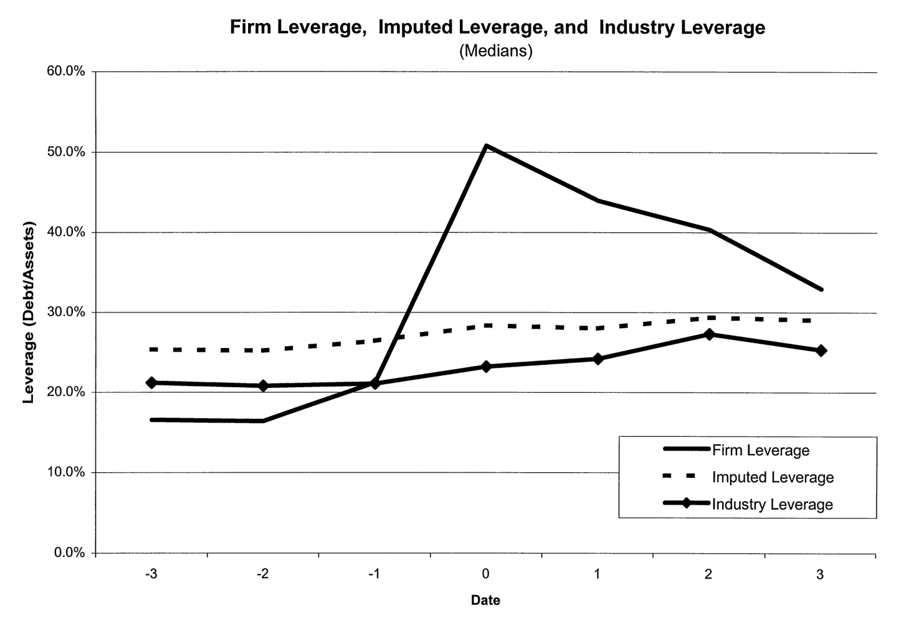
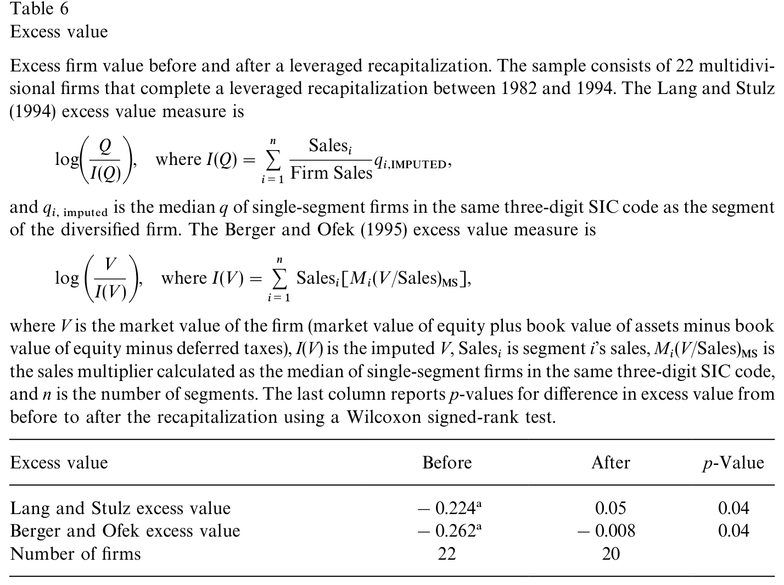
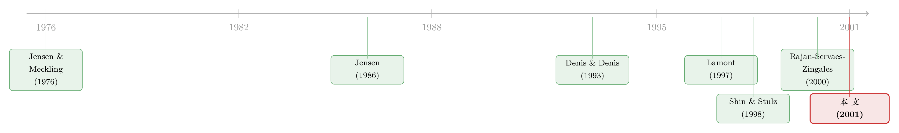

举债之后，钱不再追着「机会」走，而是追着「现金」走
本文读的是 Peyer & Shivdasani (2001, Journal of Financial Economics)：一家多部门公司在完成 杠杆重组 (leveraged recapitalization) 之后，内部资本市场会悄悄换一套分配逻辑——重组前，钱流向 q 高、机会好的部门；重组后，部门投资对 q 的敏感度下降，对自身现金流的敏感度大幅上升，「拆东墙补西墙」式的跨部门补贴停了。作者把这解读成一项长期被忽视的债务间接成本：还息的压力，逼着公司去投「现在最能产钱」的业务，而不是「未来回报最高」的业务。
1 一把刀的两个刃
关于「债」对投资的影响，金融学里一直有两套针锋相对的说法。
一派说债是坏的。它会引出 资产替代 (asset substitution, Jensen and Meckling, 1976)、会引出 投资不足 (underinvestment, Myers, 1977)、会逼出低效的清算（Harris and Raviv, 1990）——高杠杆的公司，往往被挡在好项目门外。
另一派说债是好的。Jensen（1986, 1989）那篇著名的 自由现金流 (free cash flow) 论文给出的逻辑是：债务像一根缰绳，勒住了经理人乱花钱的手，把本来要砸进负 NPV 项目的现金，硬生生「逼」成了利息支出。（关于这条逻辑的来龙去脉，可参见《现金为什么一定要「还」出去？——四十年后，重读 Jensen 的自由现金流》。）
两派的证据，谁也没说服谁。Whited（1992）发现高杠杆公司投资对现金流更敏感；Lang, Ofek and Stulz（1996）发现杠杆只抑制那些机会本就不好的公司的投资；McConnell and Servaes（1995）则干脆来了个折中——杠杆对低增长公司是正的、对高增长公司是负的。
但所有这些证据，都盯着一个数字看：整家公司的总投资。
接着，一个自然的问题是：一家多元化公司，根本不是「一口锅」。它是好几摊生意拼起来的——有的部门 q 高、前途好，有的部门现金流厚、增长慢。当你把一大笔债压到这样一家公司头上，钱在公司内部是怎么重新分配的？这件事，用公司层面的数据根本看不见。
这正是本文要钻进去的地方。
2 一个干净的实验室：杠杆重组
要回答「债如何改写内部分配」，你需要一个杠杆突然、剧烈地变化的场景，最好同一家公司能拿来前后对照。杠杆重组就是这样的天然实验：公司一次性大举借债，把募来的钱以特别股利或回购的形式派给股东，杠杆在一年之内跳上一个台阶。
作者从 SDC、Lexis-Nexis 以及 Denis and Denis（1993）、Palepu and Wruck（1992）等前人样本里筛公司，要求 1982–1994 年间真正完成重组、重组后总杠杆（总债务／总资产）至少上升 20 个百分点、且公司在事件后至少独立存续三年。最终 38 家公司满足条件，其中 22 家在重组前一年是多部门公司——这 22 家，就是全文的主角。
样本很小，所以作者全程强调中位数而非均值，这一点要先记在心里。
杠杆的变化有多剧烈？重组前三年平均杠杆 19%，重组后三年升到 38%（Wilcoxon 检验 p = 0.00）。看中位数更直观：年 −1 的 20%，到年 0 一跃为 50%；而且——这是个容易被忽略的细节——重组之后杠杆是一路往回掉的，到年 +3 已降到 34%。即便如此，重组三年后的公司仍明显比重组前更高杠杆。

Figure 2: Firm leverage, imputed leverage, and industry leverage around recapitalization. Median
图 2 还顺手回答了一个质疑：会不会是整个行业当年都在加杠杆？作者画出同三位数 SIC 行业的中位杠杆、以及按部门销售额加权推算的「推算杠杆」(imputed leverage)，两条线在年 0 附近只是微微抬头——样本公司杠杆的跳升，是它自己的事，不是行业潮水。
还有两个背景事实值得放在桌面上。其一，这些重组多半不是「主动」的：38 家里有 14 家在重组前一年收到过收购/合并要约，另有 4 家有收购传闻——约 82% 的公司，背后都站着某种外部压力。其二，重组之后公司明显「瘦身」：部门数中位从 4 个降到 3 个，Tobin's q 中位从 1.05 升到 1.31（p = 0.00），部门间 q 的离散度（变异系数）从 0.15 降到 0.10。公司变小、变贵、变聚焦了。
3 怎么量「钱流去了哪里」
光说「投资变了」太含糊。作者用两把很朴素、却很锋利的尺子，把「内部分配」量化出来。
第一把尺子叫投资分配 (investment allocation)：拿某部门的资本开支／销售比，减去整家公司的资本开支／销售比。
$$IA_i = \left(\frac{Capex}{Sales}\right)_i - \left(\frac{Capex}{Sales}\right)_{firm}$$
数字为正，说明这个部门拿到的「每元销售对应的投资」高于公司平均；为负则相反。
第二把尺子叫转移 (transfer)，衡量一个部门到底是「净吸金」还是「净吐金」：
$$T_i = \frac{Capex_i - CF_i}{Sales_i}$$
为正，意味着这个部门花的钱比自己产的现金流还多——它在被别处「补贴」；为负，则是它在替别人输血。
部门的好坏，用 推算 q (imputed Tobin's q) 来代理：取同三位数 SIC 行业里单一业务公司的中位 q，作为该部门成长机会的影子价格（这是 Lang and Stulz, 1994 以来的标准做法，因为分部本身没有市价）。
顺带一提，作者在描述统计里还用到两个行业调整量，写出来便于看清「行业调整」到底在减什么——行业调整的资本开支／销售：
$$\sum_{i=1}^{n}\frac{Sales_i}{FirmSales}\left[\left(\frac{Capex}{Sales}\right)_i-\left(\frac{Capex}{Sales}\right)_{ss}\right]$$
以及 Tobin's q 的变异系数（沿用 Rajan, Servaes and Zingales, 2000）：
$$\sqrt{\sum_{i=1}^{n}\frac{Sales_i}{\sum_{i=1}^{n}Sales_i}\,(q_i-\bar q)^2}\;\Big/\;\bar q$$
其中下标 \(i\) 指多元化公司的第 \(i\) 个部门，\(ss\) 指同三位数 SIC 行业里单一业务公司的中位值，\(\bar q\) 是按销售加权的公司平均 q。把这些尺子备好，就可以去看那个核心问题了。
4 反转：从「看 q」到「看现金流」
重组之前，这家内部资本市场看上去是「明智」的。
按投资分配那把尺子量：q 低于中位的部门，中位投资分配为 −0.003（10% 水平显著）；q 高于中位的部门，则是 +0.0007（10% 水平显著）。高 q 与低 q 之间的差异，Wilcoxon 检验 p = 0.05。翻译过来就是：机会好的部门，确实拿到了更多投资——一幅符合「最优配置」直觉的图景。回归层面也一致：部门资本开支同时正向依赖于自身的推算 q、自身现金流、以及其他部门的现金流，与 Shin and Stulz（1998）在更广样本里看到的模式一模一样。
然而，重组之后，这幅图景塌了。
还是那把尺子：重组后，高 q 部门的中位投资分配变成 −0.007（10% 水平显著），低 q 部门则升到 −0.004（显著）。高 q 与低 q 部门之间的差异，不再显著。也就是说，机会最好的部门，不再享有更高的投资强度了。
更要紧的是回归里那组敏感度的此消彼长：重组后，部门投资对 q 的敏感度下降，对自身现金流的敏感度大幅上升，而其他部门的现金流变得无关紧要了。前一句还好理解，最后一句才是点睛之笔——它意味着那种「把 A 部门赚的钱挪去投 B 部门」的跨部门再分配，在重组后停了。每个部门越来越像守着自己钱袋过日子，谁产现金多谁就投得多。
转移那把尺子讲的是同一个故事的另一面。中位数上看，无论 q 高 q 低，各部门转移都显著为负——大家投的都比自己的现金流少，所以现金流并不是一道「卡死投资」的硬约束。但相对地看就有名堂了：重组前，低 q 部门的中位转移是 −0.087，高 q 部门是 −0.067，差异在 10% 水平显著——高 q 部门相对得到了更多输血。重组后，高低 q 部门的转移统计上已无法区分。再分配，确确实实地熄火了。
于是，那个长期被忽视的成本浮出水面：还息的压力，把内部资本市场的指挥棒从「q」换成了「现金流」。当公司每年必须凑出一大笔利息，它自然会偏爱那些当下最能产现金的投资，哪怕从长期 NPV 看，钱本该投到别处去。这一点，与 Scharfstein and Stein（2000）笔下「分部寻租、扭曲配置」的内部资本市场阴暗面遥相呼应，只不过这里的扳机不是寻租，而是债。（关于杠杆如何在多元化公司内部被「重新分配」，另一个互补的视角见《杠杆这把「刀」，砍向了谁？》；而内部资本市场到底有没有效率这桩公案，可参见《拆开来看，钱才流到对的地方》。）
5 那么，这对公司价值是好是坏？
到这里，叙事似乎该顺势收尾：分部配置恶化了，所以重组是坏事。但真正关键、也最反直觉的一步，恰恰在这里。
作者为每家公司算出两个公司层面的敏感度——投资对部门 q 的敏感度、投资对部门现金流的敏感度——再把它们与 Berger and Ofek（1995）式的超额价值 (excess value) 对照。结果是：投资对 q 的敏感度，与超额价值正相关；投资对现金流的敏感度，与超额价值负相关。这给「分部配置恶化」盖了章：越是变得「看现金流不看 q」的公司，价值越受损。

Table 6: reports the median of the average excess value for the three years
可吊诡的是，公司整体价值在重组后反而显著上升了（如表 6 所示，超额价值在重组后明显抬升）。两件事怎么同时成立？
答案藏在「层次」里：投资政策对价值的影响，由两块拼成——整家公司的投资水平，和投资在各部门间的分配。Denis and Denis（1993）早就指出，这些公司在重组前普遍过度投资，砍掉这些开支本身就提升了价值；本文的样本公司，行业调整后的资本开支增长率中位是 −0.432，确实在大幅收缩。于是净效应是：「砍掉公司层面的过度投资」带来的好处，盖过了「分部配置被扭曲」带来的坏处。
这就把全文的核心贡献逼到了一个很精确的位置：重组提升了股东财富，但这份增值是一笔权衡——一边是更有效率的总投资水平，另一边是一个不再把钱送往最高 NPV 部门的内部资本市场。换句话说，如果没有分部配置的这层扭曲，价值本可以涨得更多。而且别忘了，这个样本恰好是「重组前过度投资」的一群公司，砍投资天然有利；对那些本就不存在系统性过度投资的公司，高杠杆诱发的配置扭曲，代价很可能更大。
6 文献脉络
把这篇论文放回它生长的那条线上，脉络其实很清晰。
最早的两块基石，是 Jensen and Meckling（1976）和 Myers（1977）——它们告诉我们债会扭曲投资；而 Jensen（1986）反手给出另一面，债能约束自由现金流。这是「债与投资」的母题。
接着，研究的镜头从「整家公司」推进到「公司内部」。Lamont（1997）和 Shin and Stulz（1998）发现，一个部门的投资居然依赖于其他部门的现金流——内部资本市场在跨部门挪钱；而且这种挪动，并不总是流向机会更好的地方。Rajan, Servaes and Zingales（2000）更进一步，把「多元化折价」与低效的内部投资联系起来。这条线的主旋律是：内部资本市场常常配置失灵。

与此同时，另一条专攻杠杆重组的支线在并行：Denis and Denis（1993, 1995）记录了重组后的现金流改善与投资收缩，Wruck（1994）、Denis（1994）则用 Sealed Air、Kroger 的临床案例佐证。
本文站在两条线的交汇处：它借杠杆重组这个干净的杠杆冲击，去检验内部资本市场的分配逻辑如何被债改写——并第一次把「还息压力 → 偏向高现金流投资」点名为一项债务的间接成本。
评论与延伸（Q&A + 研究方向）
(a) 几个可能的疑问
Q：投资对现金流的敏感度上升，会不会只是说明公司被债「绑紧」了融资约束，而不是配置被「扭曲」了？
这正是 Kaplan and Zingales（1997）警示过的解释难题——现金流敏感度未必等于融资约束。本文用了一个巧妙的反驳：转移测度显示，重组前后各部门投资中位都低于自身现金流，说明现金流并非一道卡死投资的硬约束。所以更像是「公司主动选择把钱留在产现金的部门」，而非「想投却没钱投」。再加上 q 敏感度下降与价值受损的证据，配置扭曲的解读更站得住。
Q：「跟着现金流走」凭什么就是坏事？当期现金流里不也含有未来盈利的信息吗？
含有，但本文的判据不是先验地认定现金流是噪声，而是让数据说话：把公司层面的现金流敏感度与超额价值对照，发现两者负相关。也就是说，在这个样本里，越偏向现金流的公司，市场给的估值越低。坏不坏，是估值替我们投的票。
Q：只有 22 家公司、还全靠中位数，结论可信吗？
这是本文最硬的软肋，作者也很坦诚，全程回避均值、强调中位数与符号秩检验。样本小源于苛刻的筛选（真正完成、存续三年、杠杆升 20 点以上）。好处是事件干净、前后可比；代价是统计功效有限、外部效度存疑。把它当作一个「设计精良但样本袖珍」的证据来读，最稳妥。
Q：这些公司本就处在收购威胁、过度投资之下，结论能外推到普通公司吗？
大概率不能直接外推，作者自己也指明了这一点。样本约 82% 背后有外部控制压力，且重组前普遍过度投资——正因为如此，砍投资才净增值。对没有系统性过度投资的公司，高杠杆诱发的配置扭曲，代价可能只增不减。这反而是个有意思的反向预测。
Q：既然公司价值上升了，凭什么说分部配置「恶化」？
关键在于把投资政策拆成两层：总量与分配。总量上的过度投资被砍，是大利好；分配上从「看 q」滑向「看现金流」，是小利空。净效应为正，不等于分配那一层没变坏。本文的精确贡献恰恰是把这两层分开称重，并指出后者拖了后腿。
Q：和 Lang-Ofek-Stulz（1996）、Denis-Denis（1993）到底有什么不同？
前两者都停在公司层面：杠杆是否抑制总投资、重组是否收缩总投资。本文第一次钻到部门层面，问的是同一笔债如何改写公司内部的钱流向——这是公司层面数据看不见的维度，也是它真正的增量。
(b) 几个可能的研究问题与提案
1. 把「债务到期压力」当成现金流压力的连续代理。 【经济故事】本文用「重组 vs 非重组」这个二元事件代理还息压力。但债务到期结构提供了一个连续、且外生性更强的冲击：明年到期的债越多，今年凑现金的压力越大。若分部投资在「高到期压力」年份更偏向高现金流部门，本文机制就被独立验证了。 【可行性】中。需要 Compustat 分部数据 + 债务到期明细（Capital IQ / DealScan），识别可借「到期墙」的预定性（pre-determined maturity）做准外生冲击，类似 threat-of-entry 文献的设计。样本比本文大得多。
2. 契约约束（covenant）密度与内部配置扭曲。 【经济故事】不同的债，「勒」法不同。现金流维持类 covenant（如利息保障倍数）会把还息压力写进合同，理应比纯财务杠杆更强地把投资推向高现金流部门。 【可行性】中。DealScan 的 covenant 数据 + 分部投资。难点在 covenant 选择的内生性——covenant 重的公司本就不同，需要用贷款市场供给冲击或 covenant 标准的时间变动来识别。
3. 用公司债持有人结构，反推「还息压力」如何传导到投资。 【经济故事】同样的杠杆，债主是谁可能很重要。短期、分散、缺乏再谈判空间的债权人，制造的「硬还息压力」更大；长期、集中的债权人则可能容忍现金流的暂时波动。这会预测：债权人结构越「硬」，内部配置越偏现金流。 【可行性】中偏低。需要把发行人层面的债券持有人/期限结构与分部投资对接，数据拼接成本高，且持有人结构本身内生。但这正落在公司债/信用市场这条线上，值得一试。
4. 现代大样本重做：LBO/私募股权收购后的内部资本市场。 【经济故事】杠杆重组在 1990 年代后近乎绝迹，但 LBO 是它的「近亲」，且数量大得多。被 PE 收购后的多部门公司，是否同样出现「q 敏感度↓、现金流敏感度↑」？这能把本文从 22 家的袖珍样本，升级为一个有统计功效的检验。 【可行性】中。私有化后分部数据稀缺是硬伤，可退而用收购方为上市公司的案例，或用监管申报里的分部口径。识别上可比照本文的事件前后设计。
参考文献
Berger, P. G., & Ofek, E. (1995). Diversification's effect on firm value. Journal of Financial Economics 37(1), 39–65.
Denis, D. J. (1994). Organizational form and the consequences of highly leveraged transactions: Kroger's recapitalization and Safeway's LBO. Journal of Financial Economics 36(2), 193–224.
Denis, D. J., & Denis, D. K. (1993). Managerial discretion, organizational structure, and corporate performance: A study of leveraged recapitalizations. Journal of Accounting and Economics 16(1–3), 209–236.
Denis, D. J., & Denis, D. K. (1995). Causes of financial distress following leveraged recapitalizations. Journal of Financial Economics 37(2), 129–157.
Harris, M., & Raviv, A. (1990). Capital structure and the informational role of debt. Journal of Finance 45(2), 321–349.
Jensen, M. C. (1986). Agency costs of free cash flow, corporate finance, and takeovers. American Economic Review 76(2), 323–329.
Jensen, M. C., & Meckling, W. H. (1976). Theory of the firm: Managerial behavior, agency costs, and capital structure. Journal of Financial Economics 3(4), 305–360.
Kaplan, S. N., & Zingales, L. (1997). Do investment–cash flow sensitivities provide useful measures of financing constraints? Quarterly Journal of Economics 112(1), 169–215.
Lamont, O. (1997). Cash flow and investment: Evidence from internal capital markets. Journal of Finance 52(1), 83–109.
Lang, L. H. P., Ofek, E., & Stulz, R. M. (1996). Leverage, investment, and firm growth. Journal of Financial Economics 40(1), 3–29.
Lang, L. H. P., & Stulz, R. M. (1994). Tobin's q, corporate diversification, and firm performance. Journal of Political Economy 102(6), 1248–1280.
McConnell, J. J., & Servaes, H. (1995). Equity ownership and the two faces of debt. Journal of Financial Economics 39(1), 131–157.
Myers, S. (1977). Determinants of corporate borrowing. Journal of Financial Economics 5(2), 147–175.
Peyer, U. C., & Shivdasani, A. (2001). Leverage and internal capital markets: Evidence from leveraged recapitalizations. Journal of Financial Economics 59(3), 477–515.
Rajan, R., Servaes, H., & Zingales, L. (2000). The cost of diversity: The diversification discount and inefficient investment. Journal of Finance 55(1), 35–80.
Scharfstein, D. S., & Stein, J. C. (2000). The dark side of internal capital markets: Divisional rent-seeking and inefficient investment. Journal of Finance 55(6), 2537–2564.
Shin, H., & Stulz, R. M. (1998). Are internal capital markets efficient? Quarterly Journal of Economics 113(2), 531–552.
Whited, T. (1992). Debt, liquidity constraints, and corporate investment: Evidence from panel data. Journal of Finance 47(4), 1425–1461.
Wruck, K. H. (1994). Financial policy, internal control, and performance: Sealed Air Corporation's leveraged special dividend. Journal of Financial Economics 36(2), 157–192.